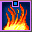
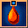
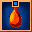
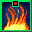
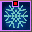
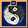

Sword Stance
The most popular stance with the widest variety of attacks. Users of this stance learn to focus their chi and improve their attacks. Focuses on attack. Sword Stance uses cold, poison and fire based powers. Power costs listed in Orange are the modified costs for those powers in the Five Clans Server.
| Sword Stance Powers | |||||
|---|---|---|---|---|---|
| Name | Stance | Level | Description | Location | |
| Shatter the Ice | Sword | 1 |
Affects: One enemy target Range: 5 meters Duration: instant Costs: 3 Chi Inflicts weapon damage to the target. Inflicts 7-12 Cold Damage. This power cannot be interrupted. |
Starter | |
| Hardened Blade | Sword | 6 |
Affects: self Duration: 96 seconds Costs: 10 Chi Physical Damage +3-5. This power can be interrupted. |
Starter | |
| Shield of Swords | Sword | 11 |
Affects: self Duration: 96 seconds Costs: 12 Chi DR +5% This power can be interrupted. |
Starter, Bu, NW, XH, LL | |
| Sword's Edge | Sword | 16 |
Affects: self Duration: 96 seconds Costs: 20 Chi Attack Rating +4% This power can be interrupted. |
Bu, HW, NW, XH, LL, TYC | |
| Break the Bonds | Sword | 20 |
Affects: one friendly target Range: 30 meters Duration: 30 seconds Costs: 18 Chi Removes Entangle Status Immunity: Entangle This power can be interrupted. |
Bu, HW, NW, XH, LL, TYC | |
| Flaming Strike | Sword | 24 |
Affects: one enemy target Range: 5 meters Duration: instant Costs: 16 Chi Inflicts weapon damage to the target. Inflicts 24-86 Fire Damage. This power cannot be interrupted. |
FV | |
| Sword's Strike | Sword | 24 |
Affects: one enemy target Range: 5 meters Duration: instant Costs: 16 Chi Inflicts weapon damage to the target. Inflicts 24-86 Cold Damage. This power cannot be interrupted. |
RMH | |
| Supreme Strike | Sword | 24 |
Affects: one enemy target Range: 5 meters Duration: instant Costs: 16 Chi Inflicts weapon damage to the target. Inflicts 24-96 Poison Damage This power cannot be interrupted. |
LY | |
| Sword's Breath | Sword | 26 |
Affects: one friendly target Range: 30 meters Duration: 120 seconds Costs: 24 Chi Cold Resistance +10 This power can be interrupted. |
RMH | |
|  | Blood's Gift | Sword | 29 |
Affects: one friendly target Range: 30 meters Duration: 120 seconds Costs: 24 Chi Fire Resistance +10 This power can be interrupted. |
FV |
| Venom's Blood | Sword | 29 |
Affects: all enemy characters within an area around self Duration: instant Costs: 26 Chi Inflicts 46-105 Poison Damage This power cannot be interrupted. |
LY | |
| Ox's Fortitude | Sword | 30 |
Affects: self Duration: 120 seconds Costs: 24 Chi Constitution +8 This power can be interrupted. |
NW, XH, LL | |
| Ultimate Strike | Sword | 33 |
Affects: all enemy characters within 30 meters in a 30 degree arc in front of you Duration: 6 seconds Costs: 24 Chi Inflicts Slow This power cannot be interrupted. |
RMH | |
|  | Heal Meditation | Sword | 38 |
Affects: all friendly characters in an area around self. Duration: instant Costs: 26 Chi Heals 5% of Maximum HP. This power can be interrupted. |
FV |
|  | Sword's Strength | Sword | 38 |
Affects: self Duration: 0 seconds Costs: 26 Chi Heals 9% of Maximum HP This power can be interrupted. |
RMH |
| Kirin's Strength | Sword | 42 |
Affects: all friendly characters in an area around self. Duration: 96 seconds Costs: 60 Chi Fire Damage +6-12 This power can be interrupted. |
FV | |
| Poisoned Blade | Sword | 42 |
Affects: self Duration: 96 seconds Costs: 60 Chi Poison Damage +3-10 This power can be interrupted. |
LY, NA | |
| Sword's Fury | Sword | 42 |
Affects: one friendly target Range: 30 meters Duration: 96 seconds Costs: 60 Chi Cold Damage +2-8 This power can be interrupted. |
RMH | |
| Calm the Mind | Sword | 45 |
Affects: one friendly target Range: 5 meters Duration: 30 seconds Costs: 18 Chi Removes Confusion Status Immunity: Confusion This power cannot be interrupted. |
NW, XH, LL | |
| Du Gu's Secret | Sword | 45 |
Affects: all friendly characters in an area around self Duration: 78 seconds Costs: 50 Chi 50 HP Max Chi +200 Chi Regeneration +7 This power can be interrupted. |
MXC | |
| Soul Enhancer | Sword | 45 |
Affects: one friendly target Range: 30 meters Duration: 78 seconds Costs: 50 Chi and 50 HP Max. Chi +250 Chi Regeneration +7 |
SWC | |
| Singing Sword | Sword | 45 |
Affects: self Duration: 78 seconds Costs: 50 Chi 50 HP Max Chi +250 Chi Regeneration +8 This power can be interrupted. |
SSC | |
| Stunning Blow | Sword | 47 |
Affects: all enemies within 5 meters in a 180 degree arc in front of you. Duration: 12 seconds Costs: 28 Chi Inflicts Stun Inflicts 24-96 Fire Damage. This power cannot be interrupted. |
FV | |
| Hidden Strike | Sword | 47 |
Affects: one enemy target Range: 5 meters Duration: 6 seconds Costs: 28 Chi Inflicts Stun Inflicts 12 Poison Constant Damage This power cannot be interrupted. |
LY | |
| Blinding Sword | Sword | 47 |
Affects: all enemy characters within 10 meters in a 60 degree arc in front of you Duration: 6 seconds Costs: 28 Chi Inflicts 24-96 Cold Damage Inflicts Stun This power cannot be interrupted. |
RMH, NA | |
| Whipping Blade | Sword | 49 |
Affects: one enemy target Range: 5 meters Duration: 24 seconds Costs: 32 Chi Inflicts 6% penalty to Defense Rating Inflicts weapon damage to the target. This power cannot be interrupted. |
LY | |
| Flame's Shield | Sword | 51 |
Affects: self Duration: 96 seconds Costs: 64 Chi Defense Rating +10% This power can be interrupted. |
FV | |
| Keen Edge | Sword | 51 |
Affects: self Duration: 96 seconds Costs: 64 Chi Attack rating +10% This power can be interrupted. |
RMH | |
| Freezing the Soul | Sword | 54 |
Affects: one enemy target Range: 5 meters Duration: 6 seconds Costs: 30 Chi Inflicts 10 Cold Constant Damage. Inflicts 15 Chi Constant Damage. Inflicts weapon damage to the target. This power cannot be interrupted. |
RMH | |
|  | Burning Furnace | Sword | 56 |
Affects: one enemy target Range: 5 meters Duration: 6 seconds Costs: 30 Chi Inflicts weapon damage to the target. Inflicts 15 Fire Constant Damage. This power cannot be interrupted. |
FV |
| Poison the Soul | Sword | 56 |
Affects: one enemy target Range: 5 meters Duration: 6 seconds Costs: 30 Chi Inflicts weapon damage to the target. Inflicts 11 Poison Constant Damage Inflicts 46-92 Poison Damage This power cannot be interrupted. |
LY | |
|  | Sword Pierces All | Sword | 57 |
Affects: one enemy target Range: 5 meters Duration: 24 seconds Costs: 34 Chi Inflicts weapon damage to the target. Inflicts 15 points penalty to Cold Resistance. This power cannot be interrupted. |
RMH |
|  | Fire's Fury | Sword | 60 |
Affects: self Duration: 96 seconds Costs: 60 Chi Drain 5% of total Attack Damage to Chi. Drain 5% of total Attack Damage to HP. This power can be interrupted. |
FV, NA |
| Weaken the Body | Sword | 60 |
Affects: one enemy target Range: 5 meters Duration: 24 seconds Costs: 34 Chi Inflicts weapon damage to the target. Inflicts 15 points penalty to Poison Resistance This power cannot be interrupted. |
LY | |
| Strike the Eyes | Sword | 62 |
Affects: one enemy target Range: 5 meters Duration: 20 seconds Costs: 30 Chi Inflicts Blindness Inflicts weapon damage to the target. This power cannot be interrupted. |
NW, XH, LL, YM | |
| Sword's Chi | Sword | 64 |
Affects: one enemy target Range: 5 meters Duration: instant Costs: 32 Chi Inflicts 75-132 Cold Damage Inflicts 40-100 Chi Damage Inflicts weapon damage to the target. This power cannot be interrupted. |
RMH, YM | |
| Du Ku's Strike | Sword | 64 |
Affects: one enemy target Range: 5 meters Duration: 12 seconds Costs: 32 Chi Inflicts weapon damage to the target. Inflicts 10 Chi Constant Damage Inflicts 68-148 Poison Damage This power cannot be interrupted. |
LY | |
 |
Mirror Strike | Sword | 65 |
Affects: all enemy targets within 30 meters in a 30 degree arc in front of you Duration: 12 seconds Costs: 75 Chi 30 HP / 35 Chi 15 HP Inflicts 76-184 Cold Damage. Inflicts 5 points penalty to Cold Resistance. This power cannot be interrupted. |
SSC |
| Slash of the Sword | Sword | 65 |
Affects: all enemy characters within 5 meters in a 180 degree arc in front of you Duration: 12 seconds Costs: 75 Chi 30 HP / 35 Chi 15 HP Inflicts 100-186 Poison Damage Inflicts 5 points penalty to Poison Resistance This power cannot be interrupted. |
MXC | |
 |
Soul's Fury | Sword | 65 |
Affects: All enemies within 10 meters in a 60 degree arc in front of you. Duration: instant Costs: 75 Chi and 30 HP / 35 Chi 15 HP Inflicts 76-184 Fire Damage. Inflicts 62-125 Chi Damage. This power cannot be interrupted. |
SWC |
| Sword's Power | Sword | 67 |
Affects: all enemy characters within 5 meters in an 180 degree arc in front of you Duration: 12 seconds Costs: 35 Chi Inflicts Slow Inflicts 82-164 Cold Damage This power cannot be interrupted. |
RMH, YM | |
| One with Sword | Sword | 70 |
Affects: self Duration: 96 seconds Costs: 76 Chi Attack Rating +6% Cold Damage +4-10 This power can be interrupted. |
RMH, YM | |
 |
The Triple Effect | Sword | 75 |
Affects: affects all enemy characters within 5 meters in an 180 degree arc in front of you Duration: instant Costs: 100 Chi 100 HP / 50 Chi 50 HP Inflicts 55-105 Cold Damage. Inflicts 55-105 Poison Damage. Inflicts 55-105 Fire Damage. This power cannot be interrupted. |
SSC |
| Cloudy Swordplay | Sword | 75 |
Affects: all enemy characters within 5 meters in a 180 degree arc in front of you Duration: 6 seconds Costs: 100 Chi 100 HP / 50 Chi 50 HP Inflicts Blindness Inflicts 125-200 Poison Damage This power cannot be interrupted. |
MXC | |
| Soul Destruction | Sword | 75 |
Affects: All enemies within 10 meters in a 60 degree arc in front of you. Duration: instant Costs: 300 Chi and 100 HP / 50 Chi 50 HP Inflicts 590-600 Chi Damage. This power cannot be interrupted. |
SWC | |
| Sheng Ling Style | Sword | 85 |
Affects: one enemy target Range: 5 meters Duration: 18 seconds Costs: 62 Chi Inflicts Stun Inflicts 10% penalty to Attack Rating Inflicts 7 points penalty to Poison Resistance Inflicts weapon damage to the target. This power cannot be interrupted. |
Le Yang 6 Gangsters, Student of the Tiger | |
| Sheng Ling Stance 21 | Sword | 93 |
Affects: all enemy characters in an area around self Range: 5 meters Duration: Instant/12 seconds Costs: 20 Chi 65 HP Inflicts 57-102 Physical Damage Inflicts 43-96 Light Damage Inflicts 133-224 Chi Damage Inflicts Entangle Inflicts Confuse This power cannot be interrupted. |
LP Quest- Sheng Ling Stance 21 | |
| Blazing Fire | Sword | 95 |
Affects: all enemy characters within 30 meters in a 30 degree arc in front of you Duration: 12 seconds Costs: 78 Chi 10 HP Inflicts 125-325 Fire Damage Inflicts 15 Fire and Chi Constant Damage Inflicts 15 points penalty to Fire Resistance This power cannot be interrupted. |
Mute Villagers, Mute Village Elder's Son, Guardians of the Ling Yun Cave, Duel Wave | |
- - Saber Powers |
- Sword Powers |
- Unarmed Powers |
- Staff Powers |
- Bow Powers |
- Clan Powers |
- Legendary Powers -
- - Back to Home -